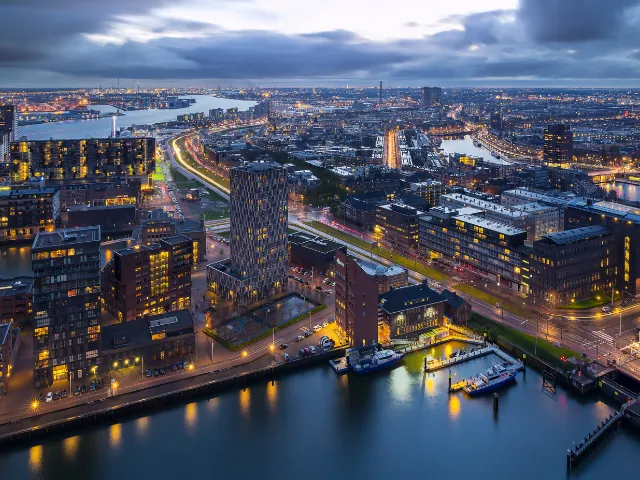

Zin in zee of stad? 3x perfecte uitstapjes buiten Nijmegen
Gepubliceerd op 17 november 2025

Soms is het heerlijk om even de stad uit te gaan en een dag of weekend iets nieuws te ontdekken. Vanuit Nijmegen ben je in no time aan zee, in een bruisende havenstad of midden in een historisch centrum. Of je nu kiest voor rust en ruimte of juist voor stedelijke gezelligheid: Nederland heeft verrassend veel te bieden op korte afstand. We zetten drie uitstapjes buiten Nijmegen op een rij die perfect zijn voor wie zin heeft in zee, cultuur of gewoon een andere sfeer.
Zand tussen je tenen in Scheveningen
Een klassieker die nooit verveelt: een dagje Scheveningen. Vanaf Nijmegen sta je binnen twee uur met je voeten in het zand. Of het nu zomer of winter is, de kustplaats bruist altijd. Wandel over de pier, geniet van een lunch met uitzicht op zee of maak een strandwandeling richting Kijkduin. Wat vaak een uitdaging is, is parkeren via APCOA in de buurt van de boulevard. Zeker in het weekend kan het druk zijn, maar gelukkig zijn er handige parkeergarages en P+R-terreinen net buiten het centrum. Van daaruit pak je eenvoudig de tram of wandel je langs de zee naar de gezellige strandtenten. Zo begint je dag ontspannen en zonder stress.
Rotterdam: stad van contrasten
Vanuit Nijmegen is Rotterdam een ideale bestemming voor een dagje stad. Deze moderne metropool combineert imposante architectuur met knusse markten en creatieve wijken. Bezoek de Markthal, wandel over de Erasmusbrug of ontdek de levendige wijk Katendrecht met zijn vele cafés en eetzaakjes. En wie slim plant, begint het bezoek zonder gedoe dankzij een goede parkeerplek. Je kunt eenvoudig een parkeergarage in Rotterdam vinden via APCOA, waar je vooraf online een plek reserveert. Zo weet je zeker dat je auto veilig staat en bespaar je tijd die je beter kunt besteden aan het verkennen van de stad. Rotterdam biedt bovendien volop mogelijkheden voor kunstliefhebbers.
Historische charme in Delft
Voor wie houdt van een iets rustigere sfeer is Delft een geweldige keuze. Deze stad ademt historie en romantiek, met haar grachten, oude gevels en gezellige marktplein. Bezoek het Vermeer Centrum, vaar door de grachten of strijk neer op een terras met uitzicht op de Nieuwe Kerk. Delft is compact, waardoor je alles gemakkelijk te voet kunt ontdekken. Bovendien ligt de stad gunstig ten opzichte van Den Haag en Rotterdam, waardoor je eenvoudig meerdere bestemmingen kunt combineren in één weekend.

Even opladen buiten de stad
Wat al deze uitstapjes gemeen hebben, is dat ze gemakkelijk bereikbaar zijn vanuit Nijmegen en toch compleet anders aanvoelen. Een dag aan zee geeft rust, terwijl een stedentrip vol musea en restaurants juist energie oplevert. Wie goed plant, voorkomt stress en haalt het maximale uit de dag. Dus waar je ook zin in hebt, pak de auto of trein en ontdek hoe verrassend dichtbij een mini-vakantie kan zijn. Na zo’n dag vol nieuwe indrukken voelt thuiskomen in Nijmegen extra fijn.
Terug naar de beginpagina